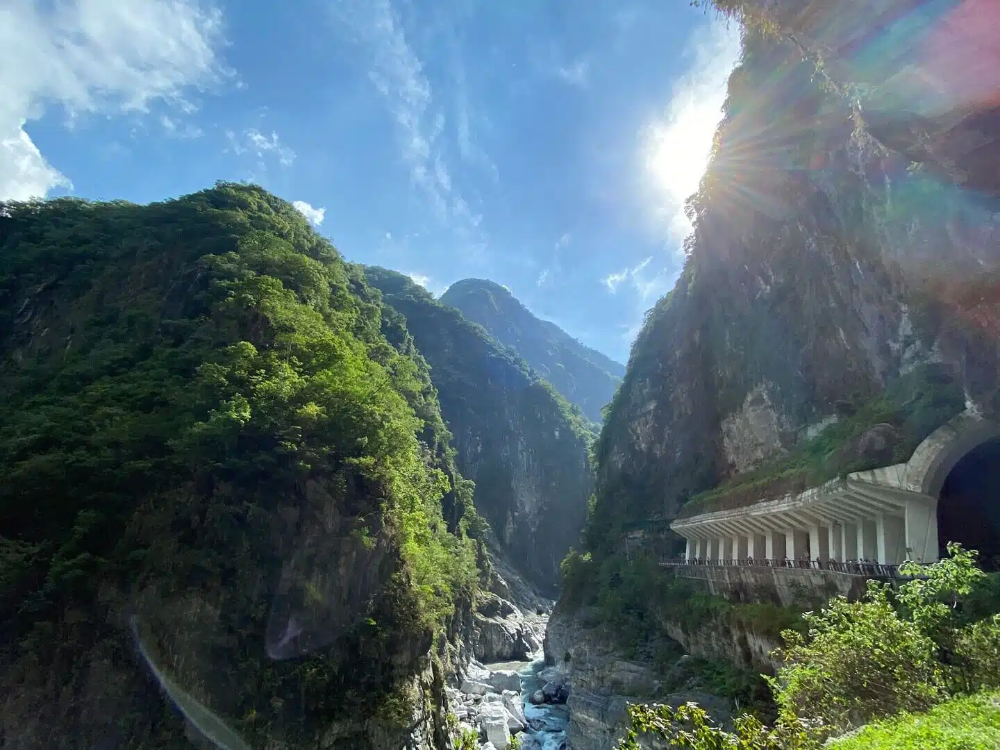

大自然的鬼斧神工，高聳入雲的大理石高山峽谷奇景

太魯閣國家公園橫跨花蓮、台中與南投三縣市，以雄偉壯麗、幾近垂直的大理石峽谷景觀聞名於世。沿著立霧溪流域延伸的峽谷，是由於地殼不斷隆起升高的造山運動，加上千萬年來溪水強烈向下切削侵蝕，共同雕刻出的世界級地質奇蹟。兩岸高聳入雲的峭壁高達數百公尺，岩壁上紋路斑駁斑斕。漫步在沿著懸崖峭壁開鑿的蜿蜒步道上，可以聽見下方溪水奔騰轟鳴，感受大自然最震撼心靈的生命力。
太魯閣峽谷最精華、最窄峭的路段。高聳的峭壁上佈滿了因流水侵蝕而形成的小洞穴，過去曾有成群的洋燕在洞中築巢，形成「百燕鳴谷」的奇觀。九曲洞步道則緊鄰著絕壁深谷，能近距離欣賞大理石岩壁的褶皺與湍急的立霧溪水。
長春祠依山而築，唐代風格的建築巍峨矗立在山壁間，一旁的泉水自山壁湧出，形成一道飛瀑直瀉而下。而著名的白楊步道終點則有著名的「水簾洞」，山泉水由隧道頂端如瀑布般瘋狂傾瀉，需要撐傘穿雨衣才能入內探險，非常奇特。
沿著砂卡礑溪而建的景觀步道，平緩好走。這裡的溪水因含有大量微小大理石碳酸鈣顆粒，在陽光照射下會呈現出不可思議的蒂芬妮藍（Tiffany Blue）透亮色澤，與清澈見底的溪床褶皺岩石交織成一幅絕美畫卷。